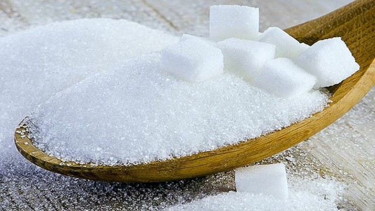

DỪA SÁP
Khái Quát Chung:
Dừa sáp là một loại quả độc đáo.
Tên gọi này xuất phát từ sự tuyệt vời của lớp thịt dừa, mềm mịn và béo ngậy.
Loại quả này lần đầu được khám phá vào khoảng thập niên 40 của thế kỷ 20 tại tỉnh Trà Vinh, nằm ở miền Tây Việt Nam - một vùng đất nổi tiếng với sự đa dạng của loại dừa thơm ngon và kỳ diệu.
Tại Trà Vinh, với điều kiện khí hậu và đất đai đặc biệt đã tạo ra một biến đổi di truyền độc đáo, chỉ xuất hiện ở đây.
Dừa sáp không thể trồng ở bất kỳ nơi nào khác, điều này làm cho nó trở nên đặc biệt và quý hiếm.
Giá trị của nó vượt xa hơn so với dừa thông thường. Điều đặc biệt là trong quá trình tạo giống dừa sáp, những quả không có sáp được lựa chọn để làm giống, bởi chúng có khả năng tạo ra phôi thai. Những quả dừa có sáp, mặc dù ngon miệng nhưng lại không thể trở thành giống, chúng được sử dụng để tạo ra sản phẩm thơm ngon khác.
Nếu bạn từng được thưởng thức dừa sáp, bạn sẽ đắm chìm trong vị ngọt ngào, đầy béo của nước dừa
Giá trị của nó vượt xa hơn so với dừa thông thường. Điều đặc biệt là trong quá trình tạo giống dừa sáp, những quả không có sáp được lựa chọn để làm giống, bởi chúng có khả năng tạo ra phôi thai. Những quả dừa có sáp, mặc dù ngon miệng nhưng lại không thể trở thành giống, chúng được sử dụng để tạo ra sản phẩm thơm ngon khác.
Nếu bạn từng được thưởng thức dừa sáp, bạn sẽ đắm chìm trong vị ngọt ngào, đầy béo của nước dừa
dạng sệt

Một Số Cách Làm Phổ Biến:
Thưởng thức trực tiếp:
Cách đơn giản nhất để cảm nhận trọn vẹn được hương vị của dừa dạng sáp đó là dùng trực tiếp. Khi ăn bạn có thể cảm nhận rõ vị béo ngọt, hương thơm của dừa lan tỏa trong miệng. Lớp cơm dừa dẻo sền sệt và đặc ruột chính là điểm đặc biệt khiến ai đã nếm thử cũng sẽ nhớ mãi không quên.
Dừa sáp dầm sữa đá:
Nguyên liệu:
1.Dừa sáp Trà Vinh

2.
Sữa đặc

3.
Đường 
4.
Đậu phộng rang giòn

5.
Đá lạnh

Các bước làm:
Bước 1:Sơ chế dừa sáp
Lột vỏ và bổ đôi trái dừa. Tiếp đến ta tách trái dừa và nạo hết phần cơm dừa bỏ vào tô.
Bước 2:Chế biến dừa
Cho vào tô khoảng 1 muỗng canh đường, sữa đặc và rồi trộn đều. Sau khi trộn ta chỉ cần cho phần dừa đã trộn vào ly cùng nước đá và một ít đậu phộng là ta đã có thể thưởng thức rồi.
Lột vỏ và bổ đôi trái dừa. Tiếp đến ta tách trái dừa và nạo hết phần cơm dừa bỏ vào tô.
Bước 2:Chế biến dừa
Cho vào tô khoảng 1 muỗng canh đường, sữa đặc và rồi trộn đều. Sau khi trộn ta chỉ cần cho phần dừa đã trộn vào ly cùng nước đá và một ít đậu phộng là ta đã có thể thưởng thức rồi.
Nguồn: trích từ kênh youtube: LEO COOKING
Sinh tố dừa sáp:
Nguyên liệu:
1.Dừa sáp Trà Vinh
2.
Sữa đặc
3.
Đường
4.
Đậu phộng rang giòn
5.
Đá lạnh
Các bước làm:
Bước 1:Sơ chế dừa sáp
Bổ đôi trái dừa. Tiếp đến ta tách hết phần cơm dừa ra ngoài tô.
Bước 2:Xay sinh tố
Cho cơm dừa vào máy xay sinh tố cùng với sữa đặc, 3 muỗng canh đường. Sau đó ta đậy nắpvà xay đến khi dừa nhuyễn đều. Tiếp đến ta cho thêm đá nhuyễn vào xay cùng. Cứ tiếp tục xay và cho thêm đá nhuyễn vào khi phần trước đã hoà tan đều. Đến khi ta thấy phần sinh tố của ta đủ sệt thì dừng lại. Cuối cùng chỉ cần cho ra ly và thưởng thức.
Bổ đôi trái dừa. Tiếp đến ta tách hết phần cơm dừa ra ngoài tô.
Bước 2:Xay sinh tố
Cho cơm dừa vào máy xay sinh tố cùng với sữa đặc, 3 muỗng canh đường. Sau đó ta đậy nắpvà xay đến khi dừa nhuyễn đều. Tiếp đến ta cho thêm đá nhuyễn vào xay cùng. Cứ tiếp tục xay và cho thêm đá nhuyễn vào khi phần trước đã hoà tan đều. Đến khi ta thấy phần sinh tố của ta đủ sệt thì dừng lại. Cuối cùng chỉ cần cho ra ly và thưởng thức.
Nguồn: trích từ kênh youtube: Tôi là ngườ Bến Tre
Thưởng Thức Sản Phẩm:


Dừa sáp-một biểu tượng ẩm thực vô cùng độc đáo của Trà Vinh.
Hương thơm của dừa sáp không giống bất cứ loại dừa nào khác.
Ngay khi dao đâm vào vỏ dày của trái dừa hương thơm ngọt ngào, đậy béo tự nhiên bung lên, đánh thức mọi giác quan.
Khi ta thưởng thức miếng thịt dừa mềm mịn, vị ngọt tinh tế bắt đầu làm say đắm từng vị giác.
Không phải mỗi loại dừa đều có khả năng mang lại cảm giác đặc biệt như thế này.
Đây là một sự kết hợp tuyệt vời của hương vị và mùi hương tự nhiên.
Dừa sáp Trà Vinh không chỉ là một loại thực phẩm, nó là một tác phẩm nghệ thuật của thiên nhiên. Sự quý hiếm của nó khiến trải nghiệm thưởng thức trở nên đặc biệt hơn. Đây là một loại thực phẩm có giá trị cao và độc đáo và điều này thêm phần thú vị cho việc thử nếm dừa sáp. Ngoài việc kích thích các giác quan, dừa sáp còn gợi nhớ những
Thưởng thức dừa sáp là một cách để kết nối với văn hóa và sự đặc sản, độc đáo của khu vực đó là một cảm giác thật sự rất tuyệt vời. Thưởng thức dừa sáp Trà Vinh còn là một hành trình trải nghiệm vẻ đẹp và độc đáo của Trà Vinh, qua những trải nghiệm mang những cảm xúc không thể nào quên.
Dừa sáp Trà Vinh không chỉ là một loại thực phẩm, nó là một tác phẩm nghệ thuật của thiên nhiên. Sự quý hiếm của nó khiến trải nghiệm thưởng thức trở nên đặc biệt hơn. Đây là một loại thực phẩm có giá trị cao và độc đáo và điều này thêm phần thú vị cho việc thử nếm dừa sáp. Ngoài việc kích thích các giác quan, dừa sáp còn gợi nhớ những
ký ức

Thưởng thức dừa sáp là một cách để kết nối với văn hóa và sự đặc sản, độc đáo của khu vực đó là một cảm giác thật sự rất tuyệt vời. Thưởng thức dừa sáp Trà Vinh còn là một hành trình trải nghiệm vẻ đẹp và độc đáo của Trà Vinh, qua những trải nghiệm mang những cảm xúc không thể nào quên.
Bảo Quản:


Với một trái dừa sáp vừa mới hái xuống từ trên cây thì bạn có thể bảo quản từ 15 – 20 ngày ở nhiệt độ phòng. Nếu muốn kéo dài thời gian bảo quản, bạn cho dừa sáp vào ngăn mát tủ lạnh sẽ giữ được khoảng 25 – 30 ngày. Với trái dừa sáp đã tách thịt, bạn có thể bảo quản dừa trong khoảng 3 ngày ở ngăn mát tủ lạnh hoặc ngăn đá trong 1 tuần. Tuy nhiên, để thưởng thức nguyên vẹn hương vị tươi mới và ngon ngọt của loại trái cây quý hiếm này bạn nên sử dụng ngay trong khoảng 10 ngày. Bảo quản quá lâu sẽ khiến dừa sáp mất đi hương vị tươi ngon, phần cơm dừa cũng không được dẻo như lúc mới hái.
Giá Cả: Dao động từ 100.000đ-300.000đ/quả tùy chất lượng mỗi quả.